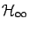

Calculus of Variations and Optimal Control Theory
A Concise Introduction
Daniel Liberzon
University of Illinois at Urbana-Champaign
Contents
Next:
Preface
Up:
Calculus of Variations and
Previous:
Calculus of Variations and
Index
Contents
1. Introduction
1.1 Optimal control problem
1.2 Some background on finite-dimensional optimization
1.2.1 Unconstrained optimization
1.2.2 Constrained optimization
1.3 Preview of infinite-dimensional optimization
1.3.1 Function spaces, norms, and local minima
1.3.2 First variation and first-order necessary condition
1.3.3 Second variation and second-order conditions
1.3.4 Global minima and convex problems
1.4 Notes and references for Chapter 1
2. Calculus of Variations
2.1 Examples of variational problems
2.1.1 Dido's isoperimetric problem
2.1.2 Light reflection and refraction
2.1.3 Catenary
2.1.4 Brachistochrone
2.2 Basic calculus of variations problem
2.2.1 Weak and strong extrema
2.3 First-order necessary conditions for weak extrema
2.3.1 Euler-Lagrange equation
2.3.2 Historical remarks
2.3.3 Technical remarks
2.3.4 Two special cases
2.3.5 Variable-endpoint problems
2.4 Hamiltonian formalism and mechanics
2.4.1 Hamilton's canonical equations
2.4.2 Legendre transformation
2.4.3 Principle of least action and conservation laws
2.5 Variational problems with constraints
2.5.1 Integral constraints
2.5.2 Non-integral constraints
2.6 Second-order conditions
2.6.1 Legendre's necessary condition for a weak minimum
2.6.2 Sufficient condition for a weak minimum
2.7 Notes and references for Chapter 2
3. From Calculus of Variations to Optimal Control
3.1 Necessary conditions for strong extrema
3.1.1 Weierstrass-Erdmann corner conditions
3.1.2 Weierstrass excess function
3.2 Calculus of variations versus optimal control
3.3 Optimal control problem formulation and assumptions
3.3.1 Control system
3.3.2 Cost functional
3.3.3 Target set
3.4 Variational approach to the fixed-time, free-endpoint problem
3.4.1 Preliminaries
3.4.2 First variation
3.4.3 Second variation
3.4.4 Some comments
3.4.5 Critique of the variational approach and preview of the maximum principle
3.5 Notes and references for Chapter 3
4. The Maximum Principle
4.1 Statement of the maximum principle
4.1.1 Basic fixed-endpoint control problem
4.1.2 Basic variable-endpoint control problem
4.2 Proof of the maximum principle
4.2.1 From Lagrange to Mayer form
4.2.2 Temporal control perturbation
4.2.3 Spatial control perturbation
4.2.4 Variational equation
4.2.5 Terminal cone
4.2.6 Key topological lemma
4.2.7 Separating hyperplane
4.2.8 Adjoint equation
4.2.9 Properties of the Hamiltonian
4.2.10 Transversality condition
4.3 Discussion of the maximum principle
4.3.1 Changes of variables
4.4 Time-optimal control problems
4.4.1 Example: double integrator
4.4.2 Bang-bang principle for linear systems
4.4.3 Nonlinear systems, singular controls, and Lie brackets
4.4.4 Fuller's problem
4.5 Existence of optimal controls
4.6 Notes and references for Chapter 4
5. The Hamilton-Jacobi-Bellman equation
5.1 Dynamic programming and the HJB equation
5.1.1 Motivation: the discrete problem
5.1.2 Principle of optimality
5.1.3 HJB equation
5.1.4 Sufficient condition for optimality
5.1.5 Historical remarks
5.2 HJB equation versus the maximum principle
5.2.1 Example: nondifferentiable value function
5.3 Viscosity solutions of the HJB equation
5.3.1 One-sided differentials
5.3.2 Viscosity solutions of PDEs
5.3.3 HJB equation and the value function
5.4 Notes and references for Chapter 5
6. The Linear Quadratic Regulator
6.1 Finite-horizon LQR problem
6.1.1 Candidate optimal feedback law
6.1.2 Riccati differential equation
6.1.3 Value function and optimality
6.1.4 Global existence of solution for the RDE
6.2 Infinite-horizon LQR problem
6.2.1 Existence and properties of the limit
6.2.2 Infinite-horizon problem and its solution
6.2.3 Closed-loop stability
6.2.4 Complete result and discussion
6.3 Notes and references for Chapter 6
7. Advanced Topics
7.1 Maximum principle on manifolds
7.1.1 Differentiable manifolds
7.1.2 Re-interpreting the maximum principle
7.1.3 Symplectic geometry and Hamiltonian flows
7.2 HJB equation, canonical equations, and characteristics
7.2.1 Method of characteristics
7.2.2 Canonical equations as characteristics of the HJB equation
7.3 Riccati equations and inequalities in robust control
7.3.1
gain
7.3.2

control problem
7.3.3 Riccati inequalities and LMIs
7.4 Maximum principle for hybrid control systems
7.4.1 Hybrid optimal control problem
7.4.2 Hybrid maximum principle
7.4.3 Example: light reflection
7.5 Notes and references for Chapter 7
Bibliography
Index
Daniel 2010-12-20